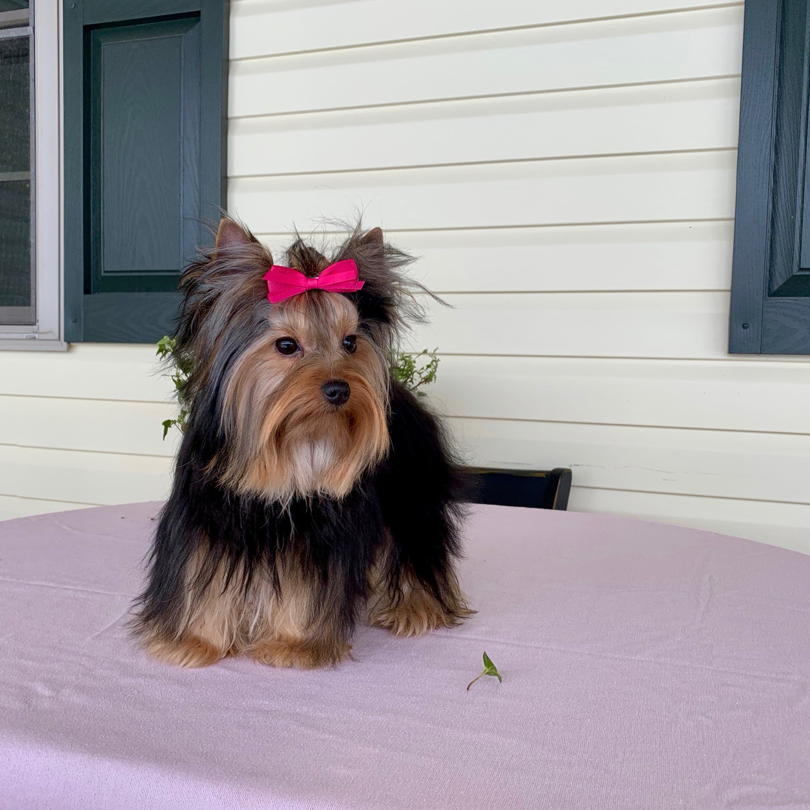

The Complete Yorkie Buyer's Guide
Written by Contented Puppies Paradise — a family raising Yorkshire Terriers, Biewers & Morkies in McClure, Pennsylvania since 2005. Honest, from twenty years of raising these little ones in our home.

Is a Yorkshire Terrier right for you?
The Yorkie is one of the most beloved companion breeds in the world, and for good reason. They are tiny, devoted, portable, and full of personality. But a Yorkie is still a terrier at heart, and the right expectations make all the difference.
A Yorkie may be a wonderful fit if you want a small companion that bonds closely to you, travels easily, and thrives on being part of daily life. A Yorkie is probably not ideal if the dog will be left alone for long days, if very young or very rough children are in the home, or if no one has time for the daily brushing their coat needs.
The Yorkie temperament
Don't let the size fool you. Yorkies are bold, bright, and surprisingly big-hearted. They are affectionate and loyal with their families, curious and playful, and often convinced they are much larger than they are.
- Devoted and people-oriented. They want to be with you, often in your lap.
- Intelligent. They learn quickly and love a job, a trick, or a puzzle.
- Alert. Many make excellent little watchdogs, so early training on "quiet" pays off.
- Sensitive. They respond to gentle, consistent guidance far better than correction.
Temperament comes first in every pairing we make. A Yorkie is going to share your home and your lap for years, so we raise confident, affectionate, well-socialized puppies, not nervous ones.
Size & the "teacup" warning
A standard Yorkshire Terrier weighs around 4 to 7 pounds full grown. You will also hear the word "teacup." It is important to understand that teacup is a marketing term, not a recognized size. Extremely tiny Yorkies, bred to be as small as possible, are often more fragile and more prone to hypoglycemia, dental crowding, and bone and joint issues.
A responsible breeder breeds for health and soundness first, and is honest about a puppy's expected adult size. Be cautious of anyone marketing "micro" or "teacup" dogs at a premium.
Yorkie vs Biewer vs Morkie
We raise all three, and families often ask which is right for them. Here is the honest difference.
- Yorkshire Terrier. The classic blue-and-tan breed. Silky coat, bold personality, 4 to 7 pounds.
- Biewer Terrier. A breed of its own, a striking tri-color (white, black, and tan). Similar size and sweet, playful temperament.
- Morkie. A Maltese-Yorkie cross, often a touch larger and softer-coated, usually very affectionate and a little more easygoing.
All three make wonderful companions. The right one comes down to the look you love and the coat care you want to commit to. We are happy to help you choose.



Health & genetics
Small breeds are wonderfully long-lived, with Yorkies often reaching 13 to 16 years, but there are a few things a good breeder watches for and a good owner should understand.
- Hypoglycemia (low blood sugar) in very young or very tiny puppies. Frequent small meals in the first months prevent it.
- Dental health. Small mouths mean crowded teeth. Brushing and dental chews matter from early on.
- Luxating patella (slipping kneecap) and tracheal issues. Keeping your Yorkie at a healthy weight and using a harness instead of a collar both help.
- Liver shunt. A responsible breeder is aware of their lines and happy to discuss it.
Our puppies come with a written health guarantee, age-appropriate vaccinations and deworming, and a vet wellness check. We are a resource for the life of your dog.
Grooming & coat care
This is the one place Yorkie owners are sometimes caught off guard. Yorkies have hair, not fur, so it grows continuously, much like ours, and does not shed much, which is wonderful, but it mats quickly without care.
- Brush every day or two to prevent mats, especially behind the ears and under the legs.
- Bathe every three to four weeks with a gentle dog shampoo.
- Trim every four to eight weeks. Many owners keep a short, adorable "puppy cut" for easy care.
- Keep nails, ears, and teeth on a routine from the very start so your puppy accepts handling for life.
The first weeks at home
The way you start sets the tone for years. Keep the first weeks calm and predictable.
- Set up a small, safe space with a crate as a cozy den, not a punishment.
- Feed the food we send, on schedule, with small frequent meals for tiny puppies.
- Keep introductions gentle, a Yorkie is small and can be overwhelmed by a houseful of visitors on day one.
- Start a potty routine immediately: out after waking, eating, and playing.
Training & housebreaking
Yorkies are smart and eager, which makes them a joy to train, but their small bladders mean housebreaking takes patience and consistency.
- Be consistent and positive. Reward the behavior you want; they bore of repetition, so keep sessions short and fun.
- Crate and schedule are your two best housebreaking tools. Many families also pad- or litter-train for convenience.
- Socialize early. Gentle, positive exposure to new sights, sounds, and people in the first months builds a confident adult.
- Use a harness, never a collar, for walks to protect the delicate trachea.
What a Yorkie really costs
A well-bred, health-guaranteed Yorkie from a responsible breeder generally ranges from about $2,000 to $4,500, depending on lineage, size, and coloring. Prices far below that range are usually a warning sign of a puppy mill or broker, where health and socialization are not the priority.
Remember the ongoing costs too: quality food, grooming every few weeks, routine vet care, and dental care. A Yorkie is a small dog with a big place in the family, and budgeting for their care is part of loving them well.
How to choose a responsible breeder
The breeder you choose is the single biggest predictor of a healthy, well-adjusted puppy. Here is exactly what to ask, and what good answers sound like.
- "Can I see the parents and their health records?" A good breeder says yes and is proud to show you.
- "Where are the puppies raised?" You want "in our home, underfoot," not in a barn or a kennel building.
- "What do you breed for?" Listen for temperament and health first, not the smallest size or the rarest color.
- "Is there a written health guarantee?" There should be, and the breeder should explain it plainly.
- "Can I talk to past families?" A breeder with happy families is glad to connect you.
- "Will you be there after I take the puppy home?" The best breeders are a resource for life.
Contented Puppies Paradise has answered yes to every one of these questions since 2005. Our puppies are raised in our home, health guaranteed, and placed with families we stay in touch with for life. See our families' reviews and available puppies.
Frequently asked questions
How much does a Yorkie puppy cost?
A well-bred, health-guaranteed Yorkie typically ranges from about $2,000 to $4,500 depending on lineage, size, and coloring. Prices far below that range are a warning sign of a puppy mill or broker.
Are teacup Yorkies healthy?
"Teacup" is a marketing term, not a recognized size. Extremely tiny Yorkies are often more fragile and prone to hypoglycemia, dental, and bone issues. We breed for health and soundness, not the smallest possible dog.
Yorkie, Biewer, or Morkie, which should I choose?
The Yorkie is the classic blue-and-tan breed; the Biewer is a tri-color breed of its own; the Morkie is a soft-coated Maltese-Yorkie cross. All three are wonderful, so it comes down to the look and the coat care you prefer. We are happy to help you decide.
How much grooming does a Yorkie need?
Yorkies have hair that grows continuously, so brush every day or two, bathe every few weeks, and trim every four to eight weeks. Many owners keep an easy-care "puppy cut."
Do you ship puppies?
We place puppies with families nationwide and offer careful pet-nanny delivery, plus live video visits so you can meet your puppy before coming home. Reach out and we will walk you through it.
Ready to meet your Yorkie?
See our available puppies, or tell us about your family and we will help you find your perfect match. We reply within 24 hours.
See Available Puppies Apply for a Puppy